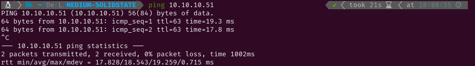
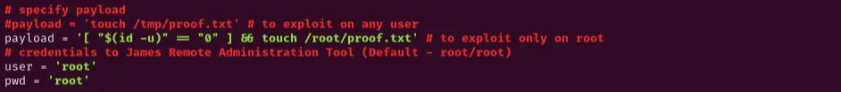

MEDIUM-SOLIDSTATE
1. Recon
Nmap
I started pinging the target to check if it was a Linux or a Windows system. The Time-To-Live (ttl) was 63, which is very close to 64, so it was a Linux system. Had it been close to 128 (or 128) it would have been a Windows system. After that I conducted an Nmap scan to detect active services on the target using -p- to scan all ports. Given that it was a Hack The Box machine (a controlled environment), I optimized the scan for speed using the following flags: --min-rate 5000, -sS for a SYN scan, -Pn to skip the host discovery stage, -n to skip reverse DNS resolution and -T5 for higher speed.


The scan revealed the following open ports:
- SSH on port 22.
- SMTP on port 25
- HTTP on port 80
- POP3 on port 110
- NNTP on port 119
- RSIP on port 4555
Then, I conducted a more thorough scan on those ports using service version detection (-sV) and the Nmap Scripting Engine (NSE) with default scripts (-sC). I also saved the output for easy reference later (-oN nmap).

Website - TCP 80
After the scan I tried visiting the webpage to look for web vulnerabilities but the site only presented information about a cybersecurity company. However, I found a domain name in the Contact section that could be used to find sub-domains later.

Since the site didn’t provide any useful information, I decided to run Gobuster to brute-force directory paths. I started with the common.txt wordlist to quickly identify potential directories for further investigation. While analyzing those initial results, I initiated a second Gobuster scan using the more comprehensive directory-list-2.3-medium.txt wordlist, knowing it would take significantly longer to complete.

The README.txt file contained a message from the SolidState developer. SolidState is described as a fully responsive HTML5 and CSS3 site template, which didn’t appear to present any exploitable information.

I attempted to use dig to find the DNS server for the domain and then perform a zone transfer to retrieve subdomains, but the attempt was unsuccessful.

2. Gaining Access
Since I was unfamiliar with the RSIP service, I attempted to connect to it using netcat and discovered a login prompt, but I didn’t have the credentials. I searched for known vulnerabilities using Searchsploit and found two remote command execution scripts. While reviewing one of them, I came across what appeared to be the default credentials. I tried them and was able to log in successfully.



After gaining access, I discovered a command that allowed me to change passwords. I listed the users and modified their passwords, granting me the ability to read their emails through the POP3 service. While reviewing the existing emails, I found one sent to the user john from mailadmin, instructing him to send a temporary password to mindy.

I then checked Mindy’s emails and found a welcome message from the company, along with the temporary credentials that John had sent her for SSH access: mindy:P@55W0rd1!2@.

Using those credentials, I connected via SSH and successfully retrieved the user flag.

Although I had access to the system, the shell was restricted to rbash (restricted Bash), limiting my access to most binaries. However, if non-interactive mode were misconfigured, I could run commands in that mode and spawn an interactive shell with Bash. I successfully exploited this misconfiguration using SSH, gaining an interactive shell that I could use to initiate the privilege escalation phase.


3. Privilege Escalation
Root
In my attempt to check for any sudo permissions, I discovered that the sudo binary was missing. I then looked for files with SUID permissions that I could use to escalate privileges, but I didn’t find any that I recognized. I continued exploring other methods before investigating any of the files further.


I started a Python HTTP server to use pspy32 on the target, allowing me to discover services running in the background. After some time, I identified a Python script (tmp.py) that was being executed periodically with root privileges, so I checked if I had write access to it. Since I had the necessary permissions, I modified the script to change the Bash permissions. Once the script was executed again, I used bash -p to obtain a shell with root privileges and retrieve the root flag.